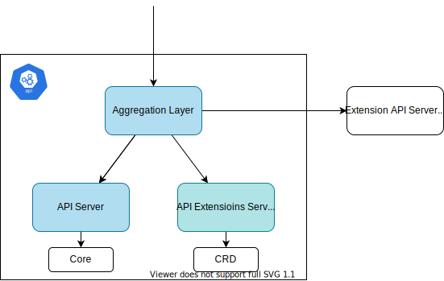
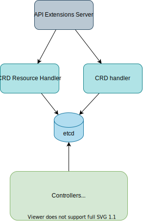

kube-apiserver
Overview

Components:
- API Extensions Server: Create HTTP handlers for CRD.
- API Server: Manage core API and core Kubernetes components.
- Aggregator Layer: Proxy the requests sent to the registered extended resource to the extension API server that runs in a Pod in the same cluster.
kube-apiserver
Auditing
https://kubernetes.io/docs/tasks/debug/debug-cluster/audit/
example
apiVersion: audit.k8s.io/v1 # This is required.
kind: Policy
# Don't generate audit events for all requests in RequestReceived stage.
omitStages:
- "RequestReceived"
rules:
# Log pod changes at RequestResponse level
- level: RequestResponse
resources:
- group: ""
# Resource "pods" doesn't match requests to any subresource of pods,
# which is consistent with the RBAC policy.
resources: ["pods"]
# Log "pods/log", "pods/status" at Metadata level
- level: Metadata
resources:
- group: ""
resources: ["pods/log", "pods/status"]
# Don't log requests to a configmap called "controller-leader"
- level: None
resources:
- group: ""
resources: ["configmaps"]
resourceNames: ["controller-leader"]
# Don't log watch requests by the "system:kube-proxy" on endpoints or services
- level: None
users: ["system:kube-proxy"]
verbs: ["watch"]
resources:
- group: "" # core API group
resources: ["endpoints", "services"]
# Don't log authenticated requests to certain non-resource URL paths.
- level: None
userGroups: ["system:authenticated"]
nonResourceURLs:
- "/api*" # Wildcard matching.
- "/version"
# Log the request body of configmap changes in kube-system.
- level: Request
resources:
- group: "" # core API group
resources: ["configmaps"]
# This rule only applies to resources in the "kube-system" namespace.
# The empty string "" can be used to select non-namespaced resources.
namespaces: ["kube-system"]
# Log configmap and secret changes in all other namespaces at the Metadata level.
- level: Metadata
resources:
- group: "" # core API group
resources: ["secrets", "configmaps"]
# Log all other resources in core and extensions at the Request level.
- level: Request
resources:
- group: "" # core API group
- group: "extensions" # Version of group should NOT be included.
# A catch-all rule to log all other requests at the Metadata level.
- level: Metadata
# Long-running requests like watches that fall under this rule will not
# generate an audit event in RequestReceived.
omitStages:
- "RequestReceived"
--audit-policy-file=/etc/kubernetes/audit-policy.yaml \
--audit-log-path=/var/log/kubernetes/audit/audit.log
Run kube-apiserver in local
Prerequisite
-
Bash version 4 or later Mac:
brew install bashversion
bash --version GNU bash, version 3.2.57(1)-release (arm64-apple-darwin21) Copyright (C) 2007 Free Software Foundation, Inc. -
Openssl:
LibreSSLis also ok. (brew install openssl<- this should also work.)version
openssl version OpenSSL 3.1.0 14 Mar 2023 (Library: OpenSSL 3.1.0 14 Mar 2023) -
etcd:
brew install etcdversion
etcd --version etcd Version: 3.5.7 Git SHA: 215b53cf3 Go Version: go1.19.5 Go OS/Arch: darwin/arm64
Steps
- Build Kubernetes binary (ref: Build Kubernetes).
- Clone Kubernetes repo.
git clone https://github.com/kubernetes/kubernetes - Build the version you want to use.
git checkout release-1.26 # you can choose any version make
- Clone Kubernetes repo.
-
Run
etcd. (ref: etcd)etcd -
Create certificates.
./generate_certificate.shmanual steps
-
Create certificates for
service-account.openssl genrsa -out service-account-key.pem 4096 openssl req -new -x509 -days 365 -key service-account-key.pem -subj "/CN=test" -sha256 -out service-account.pem -
Create certificate for
apiserver.- Generate a
ca.keywith 2048bit:openssl genrsa -out ca.key 2048 - According to the
ca.keygenerate aca.crt(use -days to set the certificate effective time):openssl req -x509 -new -nodes -key ca.key -subj "/CN=127.0.0.1" -days 10000 -out ca.crt server.keyopenssl genrsa -out server.key 2048csr.conf- generate certificate signing request (
server.csr)openssl req -new -key server.key -out server.csr -config csr.conf - generate server certificate
server.crtusingca.key,ca.crtandserver.csr.openssl x509 -req -in server.csr -CA ca.crt -CAkey ca.key \ -CAcreateserial -out server.crt -days 10000 \ -extensions v3_ext -extfile csr.conf
- Generate a
For more details, please check Generate Certificates Manually
-
-
Run the built binary.
Set the path:
PATH_TO_KUBERNETES_DIR=~/repos/kubernetes/kubernetesCheck the API server's version:
${PATH_TO_KUBERNETES_DIR}/_output/bin/kube-apiserver --versionKubernetes v1.26.3-11+9043dd888deae0Start API server:
${PATH_TO_KUBERNETES_DIR}/_output/bin/kube-apiserver --etcd-servers http://localhost:2379 \ --service-account-key-file=service-account-key.pem \ --service-account-signing-key-file=service-account-key.pem \ --service-account-issuer=api \ --tls-cert-file=server.crt \ --tls-private-key-file=server.key \ --client-ca-file=ca.crt -
Configure
kubeconfig. (You can skip this step by running./generate_certificate.sh)(I'm too lazy to generate crt and key for kubectl. So used the same one as server here.)
kubectl config set-cluster local-apiserver \ --certificate-authority=ca.crt \ --embed-certs=true \ --server=https://127.0.0.1:6443 \ --kubeconfig=kubeconfig kubectl config set-credentials admin \ --client-certificate=server.crt \ --client-key=server.key \ --embed-certs=true \ --kubeconfig=kubeconfig kubectl config set-context default \ --cluster=local-apiserver \ --user=admin \ --kubeconfig=kubeconfig kubectl config use-context default --kubeconfig=kubeconfig -
Check component status. (only
etcdis healthy.)kubectl get componentstatuses --kubeconfig kubeconfig Warning: v1 ComponentStatus is deprecated in v1.19+ NAME STATUS MESSAGE ERROR scheduler Unhealthy Get "https://127.0.0.1:10259/healthz": dial tcp 127.0.0.1:10259: connect: connection refused controller-manager Unhealthy Get "https://127.0.0.1:10257/healthz": dial tcp 127.0.0.1:10257: connect: connection refused etcd-0 Healthy {"health":"true","reason":""} - Create service account
defaultkubectl create sa default --kubeconfig kubeconfig -
Create a Pod
kubectl run nginx --image nginx --kubeconfig kubeconfig pod/nginx createdA new pod is created but will always remain Pending, as we don't have kubelet to start a container.
kubectl get pod --kubeconfig kubeconfig NAME READY STATUS RESTARTS AGE nginx 0/1 Pending 0 41s -
Read the data from etcd
etcdctl get /registry/pods/default/nginxetcdctl get /registry/pods/default/nginx /registry/pods/default/nginx k8s v1Pod� � nginxdefault"*$a77f3131-9ce0-4319-a7c2-ea859df720212����Z runnginx�� kubectl-runUpdatev����FieldsV1:� �{"f:metadata":{"f:labels":{".":{},"f:run":{}}},"f:spec":{"f:containers":{"k:{\"name\":\"nginx\"}":{".":{},"f:image":{},"f:imagePullPolicy":{},"f:name":{},"f:resources":{},"f:terminationMessagePath":{},"f:terminationMessagePolicy":{}}},"f:dnsPolicy":{},"f:enableServiceLinks":{},"f:restartPolicy":{},"f:schedulerName":{},"f:securityContext":{},"f:terminationGracePeriodSeconds":{}}}B� � kube-api-access-2f85qk�h " �token (& kube-root-ca.crt ca.crtca.crt )' % namespace v1metadata.namespace�� nginxnginx*BJL kube-api-access-2f85q-/var/run/secrets/kubernetes.io/serviceaccount"2j/dev/termination-logrAlways����FileAlways 2 ClusterFirstBdefaultJdefaultRX`hr���default-scheduler�6 node.kubernetes.io/not-readyExists" NoExecute(��8 node.kubernetes.io/unreachableExists" NoExecute(�����PreemptLowerPriority Pending"*2J BestEffortZ"You can decode with https://github.com/jpbetz/auger.
Clone and build
AUGER_DIR=~/repos/jpbetz/auger mkdir -p $AUGER_DIR git clone https://github.com/jpbetz/auger $AUGER_DIR && cd $AUGER_DIR go build -o anger main.goetcdctl get /registry/pods/default/nginx | $AUGER_DIR/anger decodeapiVersion: v1 kind: Pod metadata: creationTimestamp: "2023-03-25T00:21:26Z" labels: run: nginx name: nginx namespace: default uid: a77f3131-9ce0-4319-a7c2-ea859df72021 spec: containers: - image: nginx imagePullPolicy: Always name: nginx resources: {} terminationMessagePath: /dev/termination-log terminationMessagePolicy: File volumeMounts: - mountPath: /var/run/secrets/kubernetes.io/serviceaccount name: kube-api-access-2f85q readOnly: true dnsPolicy: ClusterFirst priority: 0 restartPolicy: Always schedulerName: default-scheduler securityContext: {} serviceAccount: default serviceAccountName: default terminationGracePeriodSeconds: 30 tolerations: - effect: NoExecute key: node.kubernetes.io/not-ready operator: Exists tolerationSeconds: 300 - effect: NoExecute key: node.kubernetes.io/unreachable operator: Exists tolerationSeconds: 300 volumes: - name: kube-api-access-2f85q projected: defaultMode: 420 sources: - {} - configMap: items: - key: ca.crt path: ca.crt name: kube-root-ca.crt - downwardAPI: items: - fieldRef: apiVersion: v1 fieldPath: metadata.namespace path: namespace status: phase: Pending qosClass: BestEffort -
Cleanup
kubectl delete pod nginx --kubeconfig kubeconfig
Errors
-
Error1: mkdir /var/run/kubernetes: permission denied
E0302 06:40:09.767084 37385 run.go:74] "command failed" err="error creating self-signed certificates: mkdir /var/run/kubernetes: permission denied"Run
sudo mkdir /var/run/kubernetes chown -R `whoami` /var/run/kubernetes -
Error2: service-account-issuer is a required flag, --service-account-signing-key-file and --service-account-issuer are required flags
E0302 07:14:46.234431 79468 run.go:74] "command failed" err="[service-account-issuer is a required flag, --service-account-signing-key-file and --service-account-issuer are required flags]"BoundServiceAccountTokenVolumeis now GA from 1.22. Need to pass--service-account-signing-key-fileand--service-account-issuer.
apiextensions-apiserver

It provides an API for registering CustomResourceDefinitions.
When creating CRD: 1. Store CRD resource. 1. Validate the CRD with several controllers. 1. CRD handler automatically creates HTTP handler for the CRD.
When deleting CRD:
1. Wait until finalizingController deletes all the custom resources.
- NewCustomResourceDefinitionHandler is called in CompletedConfig.New
- CompletedConfig.New
- Prepare genericServer with completedConfig.New.
- Initialize
CustomResourceDefinitionswithGenericAPIServer. - Initialize
apiGroupInfowith genericapiserver.NewDefaultAPIGroupInfo. - Install API group with
s.GenericAPIServer.InstallAPIGroup. - Initialize clientset for CRD with
crdClient, err := clientset.NewForConfig(s.GenericAPIServer.LoopbackClientConfig) - Initialize and set informer with
s.Informers = externalinformers.NewSharedInformerFactory(crdClient, 5*time.Minute) - Prepare handlers
- delegateHandler
- versionDiscoveryHandler
- groupDiscoveryHandler
- Initialize
EstablishingController. - Initialize
crdHandlerbyNewCustomResourceDefinitionHandlerwithversionDiscoveryHandler,groupDiscoveryHandler, informer,delegateHandler,establishingController, etc. - Set HTTP handler for GenericAPIServer with
crdHandler.s.GenericAPIServer.Handler.NonGoRestfulMux.Handle("/apis", crdHandler) s.GenericAPIServer.Handler.NonGoRestfulMux.HandlePrefix("/apis/", crdHandler) - Initialize controllers.
- discoveryController
- namingController
- nonStructuralSchemaController
- apiApprovalController
- finalizingController
- openapicontroller
- Set
AddPostStartHookOrDieforGenericAPIServerto start informer. - Set
AddPostStartHookOrDieforGenericAPIServerto start controllers. - Set
AddPostStartHookOrDieforGenericAPIServerto wait until CRD informer is synced.
Functions
Delete

Return value:
- runtime.Object
- bool
- error
Steps:
- Get key
- Get obj from the storage
- BeforeDelete: responsible for setting
deletionTimestamp.- The return value is
graceful(bool)gracefulPending(bool)err(error)
- Case1: if not deleting gracefully ->
false,false,nil - Case2: Update DeletionTimestamp & DeletionGracePeriodSeconds if necessary
- Case3: if
gracefulStrategy.CheckGracefulDeleteis false ->false,false,nil
- The return value is
- (If
pendingGracefulis true, finalizeDelete. <- this function doesn't modify object.) -
deletionFinalizersForGarbageCollection
shouldUpdateFinalizers, _ := deletionFinalizersForGarbageCollection(ctx, e, accessor, options)deletionFinalizersForGarbageCollection: Removeorphanandforegroundfinalizers ifshouldOrphanDependentsandshouldDeleteDependentsare not true respectively. if finalizers are updated, returnfalse, otherwisetrue.
-
Update
deleteImmediately:- if there's pending finalizers ->
false- markAsDeleting sets the obj's DeletionGracePeriodSeconds to 0, and sets the DeletionTimestamp to "now"
- if GracePeriodSeconds > 0 ->
false - not pendingGraceful and not graceful ->
true
1.if graceful || pendingFinalizers || shouldUpdateFinalizers { err, ignoreNotFound, deleteImmediately, out, lastExisting = e.updateForGracefulDeletionAndFinalizers(ctx, name, key, options, preconditions, deleteValidation, obj) // Update the preconditions.ResourceVersion if set since we updated the object. if err == nil && deleteImmediately && preconditions.ResourceVersion != nil { accessor, err = meta.Accessor(out) if err != nil { return out, false, apierrors.NewInternalError(err) } resourceVersion := accessor.GetResourceVersion() preconditions.ResourceVersion = &resourceVersion } }updateForGracefulDeletionAndFinalizers1. IfdeleteImmediatelyis false or if there's err, return. (not delete immediately) 1. If Dry-run, return. 1. Finally, Delete the obj from the storage.1.err := e.Storage.Delete(ctx, key, out, &preconditions, storage.ValidateObjectFunc(deleteValidation), dryrun.IsDryRun(options.DryRun), nil);finalizeDeleteReferences
- if there's pending finalizers ->